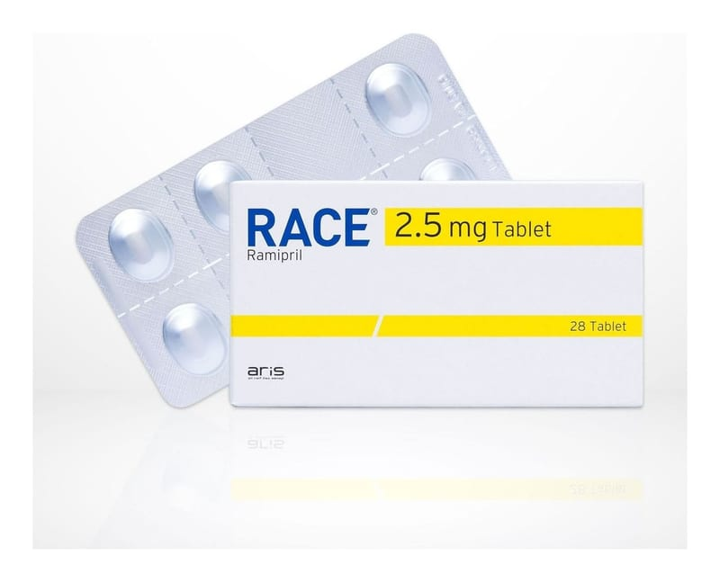

Race 2.5 mg Tablet, 28 Adet

Ne için kullanılır
KT · Bölüm 1RACE, ramipril etkin maddesini içerir, oblong ve bir yüzü çentikli, diğer yüzünde “2.5” baskılı beyaz, beyaza yakın tablettir, 28 çentikli tablet içeren blister ambalajlarda kullanıma sunulmuştur. RACE, bir anjiyotensin dönüştürücü enzim (ADE) inhibitörüdür ve etkisini kalp ve kan damarları üzerinde gösterir. Doktorunuz size RACE'i aşağıdaki nedenlerden biri veya birkaçı dolayısıyla reçetelemiş olabilir: e Kan basıncınız (tansiyonunuz) yüksekse, düşürmek için e Kalp yetmezliği adıyla bilinen bir hastalığınız varsa, kalbinizin vücudunuza kan pompalamasına yardımcı olmak için e Daha önce kalp krizi geçirdiyseniz, kalbinizin zayıflamasını önlemek için e Şeker hastalığına bağlı veya şeker hastalığından bağımsız böbrek hastalığınız varsa, böbrek hastalığının ilerlemesini önlemek için